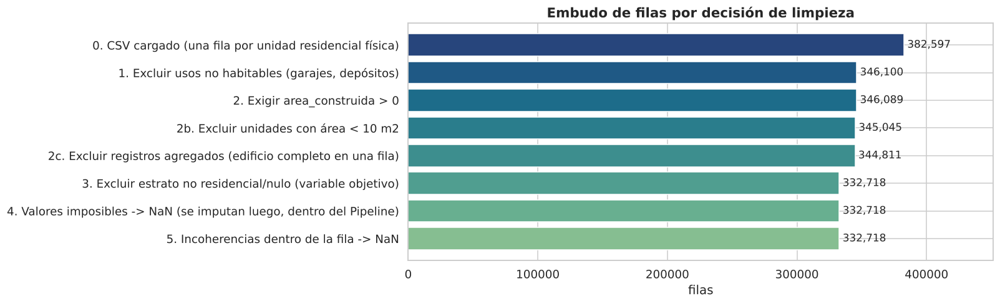
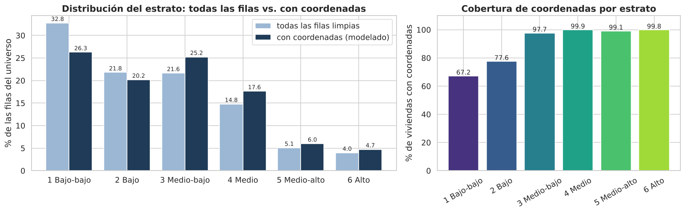

1. Base de datos#
Autores: María Carolina Cantillo Orozco (200179105) y Juan Camilo Oñoro Araujo (200177329)
Qué hace este capítulo
Pregunta que responde: ¿qué datos tenemos, cuántos son, qué problemas de calidad traen y con cuáles filas se puede trabajar?
Recorrido: primero se plantea el problema (1.1) y la fuente (1.2). Luego se explica cómo está organizada la información del catastro, que es lo que hace falta para entender todo lo demás (1.3–1.4). Con eso claro se limpian los datos paso a paso (1.5) y se revisa la calidad que queda (1.6). Después se toma la decisión más importante del capítulo, qué hacer con las filas sin coordenadas (1.7), y se mide el tamaño de la muestra (1.8) y cuánta información independiente contiene (1.9). Se cierra con los sesgos (1.10), la ética (1.11) y un resumen (1.12).
Cubre: la Sección 1 de las instrucciones del proyecto (problema, fuente, diccionario, estructura, tamaño de muestra, calidad de datos y ética).
Importante
Todo lo que se hace en este capítulo son reglas fila a fila: cada regla mira una sola fila y decide sin consultar las demás. Por ejemplo, «un año de construcción de 1512 es imposible» vale igual para cualquier vivienda, sin importar cómo sean las otras. Como estas reglas no aprenden nada del conjunto de datos, pueden aplicarse antes de separar el conjunto de prueba (capítulo 2) sin hacer trampa (sin fuga de información, ver la Guía de lectura). Lo que sí aprende de los datos (medianas para imputar, umbrales de outliers, escalado) se calcula después y solo con el conjunto de entrenamiento.
1.1 Problema de investigación#
Pregunta. ¿En qué medida las características físicas y catastrales de una unidad de vivienda (área construida, número de baños y habitaciones, pisos, antigüedad, tipo de vivienda, régimen de propiedad) y su localización permiten predecir su estrato socioeconómico (1 a 6) en Barranquilla?
Un ejemplo para fijar la idea. Imaginemos dos viviendas. La primera es una casa de 55 m², con 2 habitaciones y 1 baño, en el suroccidente de la ciudad. La segunda es un apartamento de 150 m², con 3 habitaciones y 3 baños, en el piso 12 de una torre del norte. Sin conocer su estrato, cualquier barranquillero apostaría a que la primera es de estrato bajo y la segunda de estrato alto. Este proyecto convierte esa intuición en un modelo estadístico: le damos al modelo la «ficha» de la vivienda y su ubicación, y él propone un estrato. Después medimos qué tan seguido acierta.
Tipo de tarea. Clasificación supervisada multiclase: hay 6 clases (estratos 1 a 6) y son ordinales, es decir, tienen un orden (equivocarse de 5 a 6 es menos grave que de 1 a 6). Los datos tienen coordenadas pero no tiempo. Según la Figura 1 de las instrucciones del proyecto, se sigue la ruta A (clasificación), añadiendo la sección 2.7 (componente espacial) y una partición por bloques espaciales (capítulo 2).
Por qué importa. En Colombia el estrato (Ley 142 de 1994) determina las
tarifas y subsidios cruzados de los servicios públicos domiciliarios y se usa
para focalizar inversión social. Según el DANE, la estratificación clasifica
los inmuebles residenciales a partir de la base catastral y de las
características de las viviendas y su entorno. Un modelo que relacione la
información catastral con el estrato sirve para (i) entender qué atributos
físicos se asocian con cada estrato, (ii) detectar predios cuyo estrato
asignado es atípico frente a sus características (posibles casos a revisar) y
(iii) proponer un estrato de referencia para predios que hoy aparecen como
No_Aplica/Otro.
Relación con la tesis. La tesis (tipologías constructivas y demanda de enfriamiento) usa estos mismos datos con un enfoque no supervisado; este entregable es el ejercicio supervisado del curso y le aporta a la tesis una base de datos limpia, auditada y con un EDA espacial completo.
1.2 Justificación, fuente y licencia#
Aspecto |
Detalle |
|---|---|
Fuente |
Servicio ArcGIS REST de datos abiertos de catastro de la Alcaldía de Barranquilla (Gerencia de Gestión Catastral) |
Enlace |
|
Capas usadas |
505 Características, 305 Unidad de construcción, 602 relación UC–Predio, 500 Predio, 315 Terreno (geometría), 601 relación Terreno–Predio |
Descarga |
|
Fecha de descarga |
15 de septiembre de 2026 |
Licencia |
Publicado como dato abierto por la Alcaldía de Barranquilla (Gerencia de Gestión Catastral) en su portal de datos geográficos. El servicio no declara una licencia explícita en sus metadatos; se usa como información pública con fines académicos y se cita la fuente. No se redistribuyen datos de personas: el NPN y las coordenadas se tratan como se explica en la sección 1.11. |
Por qué este dataset. (i) Es información oficial, completa para la zona urbana formal (no es una encuesta), (ii) supera ampliamente el mínimo de 20 000 observaciones, (iii) combina variables físicas, categóricas y espaciales, lo que permite un EDA completo (uni, bi, multivariado y espacial) y (iv) es el mismo insumo de la tesis.
1.3 Cómo está organizada la información del catastro#
Antes de contar filas o limpiar datos hay que entender qué es una fila y cómo se relacionan las filas entre sí. Casi todas las decisiones del libro (cómo partir los datos, cómo medir la incertidumbre, por qué las filas no son independientes) dependen de esta sección.
Tres unidades de conteo: vivienda, predio y predio matriz#
Unidad |
Qué es |
Cómo se identifica |
Ejemplo |
|---|---|---|---|
Vivienda (una fila) |
una casa o un apartamento concreto |
una fila de la capa 505 «Características» |
el apartamento 802 de la torre B |
Predio |
la unidad jurídica que registra el catastro |
el número predial nacional (NPN) completo, de 30 dígitos |
el apartamento 802 tiene su propio NPN |
Predio matriz |
el lote con lo que está construido encima: una casa, un edificio o un conjunto residencial |
los primeros 22 dígitos del NPN |
el conjunto residencial completo, con todas sus torres |
Ejemplo. Un conjunto residencial con 200 apartamentos son 200 viviendas
(200 filas) y 200 predios (cada apartamento tiene su NPN de 30 dígitos),
pero un solo predio matriz, porque todos comparten los primeros 22
dígitos. Una casa sola, en cambio, es a la vez 1 vivienda, 1 predio y 1
predio matriz. En el resto del libro, cuando se habla de «edificio» (por
ejemplo, en la partición del capítulo 2 o en la columna npn_edificio) se
hace referencia a este predio matriz.
El número predial nacional (NPN), dígito por dígito#
El NPN es un código de 30 dígitos definido por el IGAC. Leído de izquierda a derecha, va de lo más general (el departamento) a lo más particular (la unidad dentro del edificio):
Dígitos |
Campo |
Qué indica |
|---|---|---|
1–2 |
departamento |
08 = Atlántico |
3–5 |
municipio |
001 = Barranquilla |
6–7 |
zona |
urbana o rural |
8–9 |
sector |
|
10–11 |
comuna |
|
12–13 |
barrio |
|
14–17 |
manzana |
los primeros 17 dígitos identifican la manzana |
18–21 |
terreno |
el lote dentro de la manzana |
22 |
condición de propiedad |
9 = propiedad horizontal (PH); 5 = mejoras en terreno ajeno, etc. |
23–24 |
edificio o torre |
|
25–26 |
piso |
|
27–30 |
unidad predial |
el apartamento o local dentro del piso |
Por eso el predio matriz se define con los primeros 22 dígitos (hasta la condición de propiedad): todas las unidades de un mismo lote con la misma condición comparten ese prefijo.
Una excepción importante: la condición 5 (mejoras en terreno ajeno). Una mejora es una construcción levantada sobre un terreno que pertenece a otra persona, por ejemplo una casa construida en un lote ajeno, algo frecuente en la vivienda informal. En el catastro de Barranquilla, muchas mejoras distintas e independientes quedan registradas bajo el mismo prefijo de 22 dígitos, aunque no forman un edificio. Cuando haga falta agrupar viviendas «del mismo edificio» (sección 1.9), cada mejora se trata como su propio grupo. El código es corto:
es_mejora = npn.str[21] == "5" # dígito 22 (Python cuenta desde 0)
grupo = npn.str[:22].where(~es_mejora, npn) # predio matriz, salvo las mejoras
Estructura de los datos#
Unidad de observación: la unidad residencial física (una fila = una casa o un apartamento). Cada fila se une a su unidad de construcción, a su predio y al centroide (punto central) de su terreno.
Jerarquía: vivienda ⊂ predio (NPN de 30 dígitos) ⊂ predio matriz (22 dígitos) ⊂ manzana (17 dígitos) ⊂ barrio. Como varias viviendas comparten predio matriz, manzana y barrio, las filas no son independientes: esta es la razón para partir los datos por grupos y bloques y no por filas sueltas (capítulo 2).
Tipo de datos: transversal con componente espacial. Es una foto del catastro en la fecha de descarga: cada vivienda aparece una sola vez y no hay mediciones repetidas en el tiempo.
anio_construcciones un atributo de la vivienda, no la fecha de la observación, así que no aplican las secciones 2.6 (componente temporal) ni 2.8 (espacio-temporal) de las instrucciones.
Se cargan los datos crudos y se aplican las reglas de limpieza, que se explican una por una en la sección 1.5. Aquí solo se muestra el tamaño del archivo y una vista de las primeras filas. Por la consideración ética de la sección 1.11, el número predial se muestra truncado (el NPN completo identifica un inmueble concreto).
# Carga del CSV crudo y aplicación de las reglas deterministas de limpieza.
# cargar_crudo lee el CSV (NPN como texto para no perder ceros) y añade 'id_fila'.
crudo = L.cargar_crudo()
# Se resta 1 a las columnas porque 'id_fila' la agrega el pipeline, no viene del CSV.
print(f"Archivo: {C.ruta_csv().name} | filas: {len(crudo):,} | columnas: {crudo.shape[1] - 1}")
# limpiar devuelve: el dataset de trabajo, el embudo (filas que quedan tras cada
# regla y su motivo) y la tabla de valores físicamente imposibles o incoherentes
# convertidos en NaN (pasos 4 y 5). Las reglas se explican en la sección 1.5.
df, embudo, tabla_imposibles = L.limpiar(crudo, verbose=False)
print(f"Filas tras la limpieza: {len(df):,}")
# Vista de las primeras filas con el número predial enmascarado (consideración
# ética 1.11: el NPN completo identifica un inmueble concreto y permite reidentificar).
def enmascarar_npn(s):
# Conserva solo los 12 primeros dígitos (depto, municipio, zona, sector...),
# que ubican la zona pero no el predio individual.
return s.astype("string").str[:12] + "…"
# Se omiten las columnas de bandera (flag_*) para que la vista sea legible.
vista = df.drop(columns=df.filter(like="flag_").columns).head(5).copy()
vista["numero_predial_nacional"] = enmascarar_npn(vista["numero_predial_nacional"])
vista["npn_edificio"] = enmascarar_npn(vista["npn_edificio"])
vista.T # transpuesta: una fila por variable, más fácil de leer con muchas columnas
Archivo: predios_residenciales_barranquilla.csv | filas: 382,597 | columnas: 18
Filas tras la limpieza: 332,718
| 0 | 1 | 2 | 3 | 4 | |
|---|---|---|---|---|---|
| id_fila | 14 | 23 | 49 | 50 | 53 |
| numero_predial_nacional | 080010002000… | 080010002000… | 080010003000… | 080010003000… | 080010003000… |
| estrato | Bajo_Bajo_1 | Bajo_Bajo_1 | Bajo_Bajo_1 | Bajo_Bajo_1 | Bajo_Bajo_1 |
| tipo_vivienda | tv_4 | tv_4 | tv_4 | tv_4 | tv_4 |
| destinacion_economica | Habitacional | Habitacional | Habitacional | Habitacional | Habitacional |
| condicion_predio | Informal | Informal | NPH | NPH | NPH |
| area_catastral_terreno | 0.000 | 0.000 | 4,932.200 | 4,932.200 | 1,142.400 |
| area_construida | 44.740 | 44.740 | 39.540 | 39.540 | 39.540 |
| uso | Residencial_Vivienda_Hasta_3_Pisos | Residencial_Vivienda_Hasta_3_Pisos | Residencial_Vivienda_Hasta_3_Pisos | Residencial_Vivienda_Hasta_3_Pisos | Residencial_Vivienda_Hasta_3_Pisos |
| tipo_planta | Piso | Piso | Piso | Piso | Piso |
| planta_ubicacion | 1.000 | 1.000 | 1.000 | 1.000 | 1.000 |
| altura | 3.000 | 3.000 | 3.000 | 3.000 | 3.000 |
| total_habitaciones | 1.000 | 2.000 | 2.000 | 2.000 | 1.000 |
| total_banios | 0.000 | 1.000 | 0.000 | 0.000 | 0.000 |
| total_plantas | 1.000 | 1.000 | 1.000 | 1.000 | 1.000 |
| anio_construccion | 2,024.000 | 2,024.000 | 2,019.000 | 2,022.000 | 2,023.000 |
| centroide_lon | NaN | NaN | -74.892 | -74.892 | -74.892 |
| centroide_lat | NaN | NaN | 10.951 | 10.951 | 10.951 |
| centroide_fuente | sin_dato | sin_dato | directo | directo | directo |
| estrato_num | 1 | 1 | 1 | 1 | 1 |
| antiguedad | 2.000 | 2.000 | 7.000 | 4.000 | 3.000 |
| npn_edificio | 080010002000… | 080010002000… | 080010003000… | 080010003000… | 080010003000… |
| x_km | NaN | NaN | -12.570 | -12.570 | -12.596 |
| y_km | NaN | NaN | -3.611 | -3.611 | -3.662 |
| dist_centro_km | NaN | NaN | 13.078 | 13.078 | 13.118 |
| tiene_coordenadas | False | False | True | True | True |
1.4 Diccionario de variables#
Cada variable tiene un rol: la objetivo es la que se quiere predecir
(el estrato); las predictoras son las que el modelo usa para predecir;
los identificadores sirven para saber a qué vivienda corresponde cada
fila, pero nunca entran al modelo (el modelo podría memorizarlos en lugar
de aprender); los metadatos describen cómo se construyó el dato. Que
ninguna variable con rol de identificador o metadato se cuele en el modelo se
verifica en la auditoría de fuga (capítulo 9). Si el servidor responde, se
descargan también los alias y dominios oficiales de ArcGIS (por ejemplo, el
significado de los códigos de tipo_vivienda).
# Diccionario de variables: nombre, tipo, unidad, significado y ROL en el modelo.
# El rol (objetivo, predictora, identificador, metadato) es lo que luego se audita
# en el capítulo 9 para asegurar que ninguna columna con fuga entre al modelo.
dicc = pd.DataFrame([
("numero_predial_nacional", "texto (30 dígitos)", "—", "Número predial nacional (IGAC): depto, municipio, zona, sector, comuna, barrio, manzana, terreno, condición, edificio, piso, unidad (sección 1.3)", "identificador"),
("npn_edificio", "texto (22 dígitos)", "—", "Prefijo del NPN que identifica el predio matriz: edificio, conjunto o lote (derivada)", "identificador / grupo"),
("estrato", "categórica ordinal (texto)", "—", "Estrato socioeconómico tal como llega de ArcGIS (Bajo_Bajo_1 … Alto_6, No_Aplica, Otro)", "origen del objetivo"),
("estrato_num", "categórica ordinal", "1–6", "Estrato numérico extraído del texto", "OBJETIVO"),
("area_construida", "numérica continua", "m²", "Área construida de la unidad", "predictora"),
("area_catastral_terreno", "numérica continua", "m²", "Área del terreno del predio (en unidades PH, su cuota del lote común)", "predictora"),
("total_habitaciones", "numérica discreta", "conteo", "Número de habitaciones", "predictora"),
("total_banios", "numérica discreta", "conteo", "Número de baños", "predictora"),
("total_plantas", "numérica discreta", "conteo", "Número de plantas/pisos de la construcción", "predictora"),
("anio_construccion", "numérica discreta", "año", "Año de construcción registrado en el catastro", "origen de antigüedad"),
("antiguedad", "numérica discreta", "años", f"{C.ANIO_ACTUAL} − año de construcción (derivada)", "predictora"),
("planta_ubicacion", "numérica discreta", "piso", "Piso en que está la unidad", "predictora"),
("altura", "numérica continua", "m (verificar)", "Altura de la unidad de construcción", "predictora"),
("tipo_vivienda", "categórica nominal (código)", "—", "Código de dominio ArcGIS del tipo de vivienda", "predictora"),
("uso", "categórica nominal", "—", "Uso catastral de la unidad (casa, apartamento en PH, barraca…)", "predictora"),
("condicion_predio", "categórica nominal", "—", "Régimen: NPH (no propiedad horizontal), PH_Matriz, PH_Unidad_Predial, Informal…", "predictora"),
("destinacion_economica", "categórica nominal", "—", "Destinación económica del predio", "predictora"),
("tipo_planta", "categórica nominal", "—", "Tipo de planta (Piso, Sótano, Mezanine…)", "predictora"),
("centroide_lat / centroide_lon", "numérica continua", "grados (WGS84, EPSG:4326)", "Centroide del terreno del predio (o de su predio matriz)", "espacial"),
("x_km / y_km", "numérica continua", "km", "Coordenadas proyectadas localmente, origen en el centro histórico (derivada)", "predictora espacial"),
("dist_centro_km", "numérica continua", "km", "Distancia al centro histórico (derivada)", "predictora espacial"),
("centroide_fuente", "categórica nominal", "—", "Cómo se obtuvo el centroide: directo / propagado_matriz / sin_dato (metadato del pipeline)", "metadato (excluida)"),
("flag_imposible_*", "booleana", "—", "Marca si el valor original era físicamente imposible y se convirtió en NaN", "auditoría"),
("flag_incoherente_*", "booleana", "—", "Marca si el valor era incoherente con el resto de la fila (baños o habitaciones) y se convirtió en NaN", "auditoría"),
], columns=["variable", "tipo", "unidad", "significado", "rol"])
# Intento opcional de enriquecer el diccionario con los alias y dominios oficiales
# del servicio ArcGIS (se descargan una vez y se guardan en datos/dominios_arcgis.json).
try:
from src.dominios import descargar_dominios
dominios = descargar_dominios()
# Alias oficial de cada campo; queda vacío para las variables derivadas.
dicc["alias ArcGIS"] = dicc["variable"].map(lambda v: (dominios.get(v) or {}).get("alias"))
# Tabla código -> significado de tipo_vivienda (llega como código numérico).
tv = (dominios.get("tipo_vivienda") or {}).get("dominio")
if tv:
print("Dominio oficial de tipo_vivienda:", tv)
except Exception as e: # sin internet o bloqueado: el libro sigue
print(f"(No se pudieron descargar los dominios de ArcGIS: {type(e).__name__}. "
"El diccionario se muestra sin alias oficiales.)")
dicc
Dominio oficial de tipo_vivienda: {'1': 'Vivienda de Interés Social', '2': 'Vivienda de Interés Prioritario', '3': 'Vivienda que no es de interés social', '4': 'No Aplica'}
| variable | tipo | unidad | significado | rol | alias ArcGIS | |
|---|---|---|---|---|---|---|
| 0 | numero_predial_nacional | texto (30 dígitos) | — | Número predial nacional (IGAC): depto, municip... | identificador | Número Predial Nacional |
| 1 | npn_edificio | texto (22 dígitos) | — | Prefijo del NPN que identifica el predio matri... | identificador / grupo | NaN |
| 2 | estrato | categórica ordinal (texto) | — | Estrato socioeconómico tal como llega de ArcGI... | origen del objetivo | Estrato |
| 3 | estrato_num | categórica ordinal | 1–6 | Estrato numérico extraído del texto | OBJETIVO | NaN |
| 4 | area_construida | numérica continua | m² | Área construida de la unidad | predictora | Área Construida |
| 5 | area_catastral_terreno | numérica continua | m² | Área del terreno del predio (en unidades PH, s... | predictora | Área Catastral Terreno |
| 6 | total_habitaciones | numérica discreta | conteo | Número de habitaciones | predictora | Total Habitaciones |
| 7 | total_banios | numérica discreta | conteo | Número de baños | predictora | Total Baños |
| 8 | total_plantas | numérica discreta | conteo | Número de plantas/pisos de la construcción | predictora | Total Pisos |
| 9 | anio_construccion | numérica discreta | año | Año de construcción registrado en el catastro | origen de antigüedad | Año Construcción |
| 10 | antiguedad | numérica discreta | años | 2026 − año de construcción (derivada) | predictora | NaN |
| 11 | planta_ubicacion | numérica discreta | piso | Piso en que está la unidad | predictora | Planta Ubicación |
| 12 | altura | numérica continua | m (verificar) | Altura de la unidad de construcción | predictora | Altura |
| 13 | tipo_vivienda | categórica nominal (código) | — | Código de dominio ArcGIS del tipo de vivienda | predictora | Tipo de Vivienda |
| 14 | uso | categórica nominal | — | Uso catastral de la unidad (casa, apartamento ... | predictora | Uso |
| 15 | condicion_predio | categórica nominal | — | Régimen: NPH (no propiedad horizontal), PH_Mat... | predictora | Condición Predio |
| 16 | destinacion_economica | categórica nominal | — | Destinación económica del predio | predictora | Destinación Económica |
| 17 | tipo_planta | categórica nominal | — | Tipo de planta (Piso, Sótano, Mezanine…) | predictora | Tipo Planta |
| 18 | centroide_lat / centroide_lon | numérica continua | grados (WGS84, EPSG:4326) | Centroide del terreno del predio (o de su pred... | espacial | NaN |
| 19 | x_km / y_km | numérica continua | km | Coordenadas proyectadas localmente, origen en ... | predictora espacial | NaN |
| 20 | dist_centro_km | numérica continua | km | Distancia al centro histórico (derivada) | predictora espacial | NaN |
| 21 | centroide_fuente | categórica nominal | — | Cómo se obtuvo el centroide: directo / propaga... | metadato (excluida) | NaN |
| 22 | flag_imposible_* | booleana | — | Marca si el valor original era físicamente imp... | auditoría | NaN |
| 23 | flag_incoherente_* | booleana | — | Marca si el valor era incoherente con el resto... | auditoría | NaN |
1.5 Limpieza: las reglas y el embudo de filas#
El CSV descargado trae filas que no sirven para la pregunta (garajes,
predios sin estrato) y valores que no pueden ser ciertos (un año 2500). La
limpieza se hace con reglas fijas, definidas de antemano en
src/config.py, que se aplican en orden. Hay dos tipos de regla:
las que eliminan la fila, porque la fila no describe una vivienda con estrato (pasos 1 a 3), y
las que conservan la fila pero anulan un valor concreto (lo pasan a
NaN, es decir, «dato faltante») y dejan una bandera que recuerda que se anuló (pasos 4 y 5). Así no se pierde el resto de la información de la vivienda; el valor faltante se rellena después, dentro del modelo y solo con el conjunto de entrenamiento (capítulos 3 y 10).
1.5.1 Las reglas, una por una#
Paso |
Regla |
Qué hace con la fila |
Por qué |
Ejemplo |
|---|---|---|---|---|
1 |
Excluir usos no habitables |
elimina |
un garaje o un depósito no es un hogar y no tiene estrato propio |
|
2 |
Exigir área construida > 0 |
elimina |
sin área no hay vivienda que describir |
área vacía o 0 |
2b |
Excluir unidades de menos de 10 m² |
elimina |
casi siempre son parqueaderos o depósitos registrados como vivienda |
un «apartamento» de 6 m² sin baño |
2c |
Excluir registros agregados |
elimina |
la fila describe un edificio completo, no una vivienda |
una fila con 684 habitaciones y 456 baños |
3 |
Excluir estrato no residencial o vacío |
elimina |
el estrato es la respuesta que se quiere predecir: no se puede inventar |
|
4 |
Valores imposibles → |
conserva |
el valor es un error o un código, no un dato |
año de construcción 2500 |
5 |
Incoherencias dentro de la fila → |
conserva |
cada valor por separado es posible, pero juntos no |
82 baños en un apartamento de 2 habitaciones y 82 m² |
Los umbrales de los pasos 2b, 2c, 4 y 5 salieron de un diagnóstico de
rangos (diagnostico_rangos.py, bitácora A.10; reporte en
diagnostico_rangos_reporte.txt) que se hizo mirando solo el conjunto de
entrenamiento, para no usar el conjunto de prueba al definir las reglas.
Las cifras que aquí se citan «del diagnóstico previo» vienen de ese reporte;
el efecto de las reglas sobre todo el dataset es el que muestra el embudo.
1.5.2 El embudo de filas#
El embudo muestra cuántas filas quedan después de cada regla. Sirve para juzgar si la limpieza deja fuera demasiado, o a un grupo concreto de viviendas.
# Embudo: filas que sobreviven a cada regla, cambio respecto al paso anterior y
# % del CSV original. Los pasos 4 y 5 no eliminan filas (cambio = 0).
embudo
| paso | filas | motivo | cambio | % del total inicial | |
|---|---|---|---|---|---|
| 0 | 0. CSV cargado (una fila por unidad residencia... | 382597 | 0 | 100.000 | |
| 1 | 1. Excluir usos no habitables (garajes, depósi... | 346100 | no son vivienda: fuera del alcance del problema | -36497 | 90.460 |
| 2 | 2. Exigir area_construida > 0 | 346089 | sin área construida no hay unidad de vivienda ... | -11 | 90.460 |
| 3 | 2b. Excluir unidades con área < 10 m2 | 345045 | no son vivienda: probables parqueaderos o depó... | -1044 | 90.180 |
| 4 | 2c. Excluir registros agregados (edificio comp... | 344811 | habitaciones > 20, baños > 15 o área > 2000 m2... | -234 | 90.120 |
| 5 | 3. Excluir estrato no residencial/nulo (variab... | 332718 | No_Aplica/Otro/nulo: imputar el objetivo inven... | -12093 | 86.960 |
| 6 | 4. Valores imposibles -> NaN (se imputan luego... | 332718 | 484 filas tenían al menos un valor imposible; ... | 0 | 86.960 |
| 7 | 5. Incoherencias dentro de la fila -> NaN | 332718 | 396 filas con baños o habitaciones incoherente... | 0 | 86.960 |

Lectura del embudo
De las 382 597 filas descargadas quedan 332 718 (87.0 %).
La mayor pérdida es el paso 1: 36 497 garajes y depósitos (9.5 % del crudo). Le sigue el paso 3: 12 093 filas sin estrato residencial (3.2 %).
Las reglas de alcance retiran 1 044 unidades de menos de 10 m² (paso 2b) y 234 registros agregados (paso 2c), el 0.3 % del crudo entre las dos. El paso 2 solo retira 11 filas sin área.
Los pasos 4 y 5 no eliminan filas (cambio = 0): 484 filas tienen al menos un valor imposible y 396 una incoherencia. Esos valores pasan a
NaNy la fila se conserva.
1.5.3 Valores imposibles y códigos centinela (paso 4)#
Para cada variable numérica se fija un rango plausible de dominio, es
decir, un rango que viene del conocimiento del problema y no de los datos
(por ejemplo, ninguna vivienda de Barranquilla tiene más de 60 pisos). Un
valor fuera de rango se convierte en NaN y se marca con una bandera
flag_imposible_*. Las dos últimas filas de la tabla son las reglas de
coherencia del paso 5, que se explican en 1.5.4.
# Tabla generada por L.limpiar: por variable, el rango plausible de dominio
# (definido en config, no aprendido de los datos) y cuántos valores cayeron fuera.
tabla_imposibles
| variable | rango plausible | n imposibles | % | |
|---|---|---|---|---|
| 0 | total_habitaciones | [0, 30] | 0 | 0.000 |
| 1 | total_banios | [0, 20] | 0 | 0.000 |
| 2 | total_plantas | [0, 40] | 4 | 0.001 |
| 3 | planta_ubicacion | [1, 60] | 351 | 0.105 |
| 4 | area_construida | [1, 20000] | 0 | 0.000 |
| 5 | area_catastral_terreno | [0, 50000] | 0 | 0.000 |
| 6 | anio_construccion | [1900, 2026] | 129 | 0.039 |
| 7 | total_banios (coherencia) | <= habitaciones + 3 | 41 | 0.012 |
| 8 | total_habitaciones (coherencia) | área / habitación >= 6 m2 | 355 | 0.107 |
Un caso especial son los códigos centinela: valores imposibles que se repiten muchas veces de forma idéntica. Un error de digitación al azar produciría valores dispersos; un mismo valor imposible repetido cientos de veces es un código que el sistema de origen usa para decir «no sé». La celda siguiente lista los años fuera de rango más frecuentes en el CSV crudo.
# Años de construcción fuera de rango en el CSV CRUDO (antes del embudo), con su
# frecuencia. Si un valor imposible se repite mucho, es un código centinela, no ruido.
anio_crudo = pd.to_numeric(crudo["anio_construccion"], errors="coerce")
top_raros = anio_crudo[(anio_crudo < C.ANIO_MIN_PLAUSIBLE) | (anio_crudo > C.ANIO_MAX_PLAUSIBLE)]
print("Años fuera de rango más frecuentes (crudo):")
print(top_raros.value_counts().head(10).to_string())
Años fuera de rango más frecuentes (crudo):
anio_construccion
2500 809
1512 200
20 1
Hallazgo: códigos centinela en el año y en el piso
En el CSV crudo, el año 2500 aparece 809 veces, 1512 200 veces y
20 una vez. Un año imposible repetido de forma idéntica no es un error de
digitación aleatorio: es un código centinela del sistema de origen para
«año desconocido». No hay ningún dato real entre el año 20 y 1899; el primer
año real es 1900, de ahí el límite inferior (bitácora 3.2). La mayoría de
esas filas pertenecen a garajes, depósitos o predios sin estrato y salen en
los pasos previos del embudo; dentro del dataset de trabajo quedan 129
años imposibles (0.04 %), que se tratan como faltantes, no como años.
planta_ubicacion muestra el mismo patrón: los pisos 97, 98 y 99 no existen
en Barranquilla y se tratan como código. El rango plausible es [1, 60]: el
techo queda por encima de los pisos reales más altos y por debajo de los
códigos. La regla anula 351 valores (0.11 %) del dataset de trabajo; en
entrenamiento, tras la regla, el piso máximo es 41 (capítulo 3), es decir,
las torres altas reales se conservan.
En la tabla de rangos, habitaciones, baños y área construida tienen 0
valores imposibles, y total_plantas solo 4: sus extremos ya no se anulan
valor a valor, porque las filas que los tenían se excluyeron como registros
agregados en el paso 2c (sección 1.5.4).
1.5.4 ¿Cada fila es una vivienda? Reglas de alcance (2b, 2c) e incoherencias (5)#
Un rango por variable no basta. El diagnóstico de rangos mostró que los valores extremos de habitaciones, baños y área no eran errores de digitación aislados, sino filas que no describen una vivienda:
Registros agregados (paso 2c). Filas
NPHque describen un edificio completo: en el diagnóstico previo, la más extrema tenía 684 habitaciones, 456 baños, 19 pisos y 52 168 m². Se excluyen las filas con más de 20 habitaciones, más de 15 baños o más de 2 000 m², igual que los garajes y depósitos.Unidades diminutas (paso 2b). En el diagnóstico previo había 215 filas de menos de 5 m² y 656 de menos de 10 m², en todos los estratos y a menudo con 0 baños o con el piso «99» (un código). Son, sobre todo, parqueaderos o depósitos registrados con uso residencial. Se excluyen con un área mínima de 10 m². No se usó un umbral mayor (15 o 20 m²) para no sacar viviendas mínimas reales de uno o dos cuartos, que son las de los hogares más pobres: un sesgo así afectaría justamente a los estratos 1 y 2.
Piso de ubicación. Los valores 97, 98 y 99 son códigos (299 filas en el diagnóstico previo), pero hay pisos reales hasta el 41: 41 apartamentos en PH de estratos 5 y 6 entre los pisos 30 y 41. Por eso el techo de
planta_ubicacionse fija en 60 (y no en 40, como el detotal_plantas): deja pasar esas torres y sigue atrapando los códigos.Incoherencias dentro de la fila (paso 5). Valores que por separado están en rango pero son imposibles dado el resto de la fila: por ejemplo, en el diagnóstico previo apareció un apartamento de 2 habitaciones y 82 m² con 82 baños. Las reglas son: más baños que habitaciones + 3, o menos de 6 m² por habitación. Se anula el valor sospechoso (
NaN+ banderaflag_incoherente_*) y la fila se conserva.
La celda siguiente describe quiénes salen por las reglas 2b y 2c (por condición del predio, uso y estrato), para verificar que no afectan a un solo tipo de vivienda.
# Quiénes salen por las reglas de alcance 2b (área mínima) y 2c (registro
# agregado): se reproducen sobre el crudo tras los pasos 1 y 2 para describirlos por
# condición del predio, uso y estrato. Es una tabla descriptiva: los umbrales
# están fijados en config.py y no se ajustan aquí.
base = crudo.copy()
for col in ["uso", "condicion_predio", "estrato"]:
base[col] = L._normalizar_texto(base[col])
base = base[~base["uso"].isin(C.USOS_NO_HABITABLES)]
area_b = pd.to_numeric(base["area_construida"], errors="coerce")
base = base[area_b > 0].copy()
base["estrato_num"] = L.extraer_estrato_numerico(base["estrato"])
for col in C.UMBRALES_REGISTRO_AGREGADO:
base[col] = pd.to_numeric(base[col], errors="coerce")
regla_2b = base["area_construida"] < C.AREA_MIN_VIVIENDA
regla_2c = ~regla_2b & pd.concat([base[c] > u for c, u in C.UMBRALES_REGISTRO_AGREGADO.items()], axis=1).any(axis=1)
for nombre, m in [(f"2b: área < {C.AREA_MIN_VIVIENDA} m²", regla_2b), ("2c: registro agregado", regla_2c)]:
sub = base[m]
print(f"\n{nombre}: {int(m.sum()):,} filas")
print(" condición del predio:", sub["condicion_predio"].value_counts().head(5).to_dict())
print(" uso:", sub["uso"].value_counts().head(4).to_dict())
print(" estrato (1-6; NaN = sin estrato residencial):",
{(int(k) if pd.notna(k) else "NaN"): int(v)
for k, v in sub["estrato_num"].value_counts(dropna=False).sort_index().items()})
print(" área construida: mediana", round(sub["area_construida"].median(), 1),
"| habitaciones: mediana", sub["total_habitaciones"].median())
2b: área < 10 m²: 1,044 filas
condición del predio: {'PH_Unidad_Predial': 400, 'NPH': 354, 'Informal': 278}
uso: {'Residencial_Vivienda_Hasta_3_Pisos': 643, 'Residencial_Vivienda_Hasta_3_Pisos_En_PH': 291, 'Residencial_Apartamentos_4_y_mas_pisos_en_PH': 108, 'Residencial_Vivienda_Recreacional_En_PH': 2}
estrato (1-6; NaN = sin estrato residencial): {1: 294, 2: 253, 3: 270, 4: 138, 5: 36, 6: 6, 'NaN': 47}
área construida: mediana 6.0 | habitaciones: mediana 1.0
2c: registro agregado: 234 filas
condición del predio: {'NPH': 146, 'PH_Unidad_Predial': 28, 'Informal': 12, 'PH_Matriz': 6}
uso: {'Residencial_Apartamentos_4_y_mas_pisos': 112, 'Residencial_Vivienda_Hasta_3_Pisos': 94, 'Residencial_Vivienda_Hasta_3_Pisos_En_PH': 17, 'Residencial_Apartamentos_4_y_mas_pisos_en_PH': 11}
estrato (1-6; NaN = sin estrato residencial): {1: 18, 2: 18, 3: 45, 4: 37, 5: 22, 6: 16, 'NaN': 78}
área construida: mediana 1161.0 | habitaciones: mediana 24.0
Lectura
Regla 2b (área < 10 m²): 1 044 filas, con una mediana de 6 m². Están repartidas en todos los regímenes (400
PH_Unidad_Predial, 354NPH, 278Informal) y en todos los estratos (294 de estrato 1, 253 de 2, 270 de 3, 138 de 4, 36 de 5, 6 de 6 y 47 sin estrato residencial). No es una regla que afecte solo a la vivienda informal ni a un solo estrato.Regla 2c (registros agregados): 234 filas, sobre todo
NPH(146) y con uso de apartamentos de 4 y más pisos (112), con una mediana de 1 161 m² y 24 habitaciones. 78 de ellas tampoco tenían estrato residencial.Paso 5 (incoherencias): 396 filas (0.12 %): 355 con menos de 6 m² por habitación y 41 con más baños que habitaciones + 3 (dos últimas filas de la tabla de 1.5.3). Siguiendo el precedente de De Cock (2011) de documentar y tratar de forma simple los casos marginales, esos valores se convierten en
NaNy se imputan dentro del Pipeline; ninguna fila se elimina en los pasos 4 y 5.
¿Por qué no usar la regla de Tukey para limpiar? La regla de Tukey marca como outlier todo valor que se aleje mucho del centro de la distribución (se explica en el capítulo 3). Las notas de clase (9.10.4.1.2) la proponen para identificar outliers, y así se usa en el capítulo 3. Pero en variables de cola larga marca miles de viviendas reales: en el diagnóstico previo señalaba 10 580 filas en habitaciones y 13 009 en área. Una casa de 400 m² en el norte es poco común, pero existe. Por eso aquí se separan dos conceptos:
Imposible (error, código o fila que no es vivienda): se trata con reglas de dominio fijas, fila a fila y antes de la partición.
Extremo pero posible (una casa grande de estrato 6): se conserva, y su influencia en el modelo se limita con una winsorización (recortar los valores por encima del percentil 99.9) aprendida solo con entrenamiento (capítulo 3).
Dos hallazgos del diagnóstico no se convirtieron en reglas y quedan como limitaciones. (i) En el diagnóstico previo había 2 014 filas con 0 habitaciones y 7 145 con 0 baños: pueden ser apartaestudios o viviendas con baño compartido, o un «dato no registrado»; sin el diccionario del catastro no se puede decidir, así que se conservan. (ii) El año de construcción está amontonado en ciertos valores (en ese mismo diagnóstico, 1986 aparecía en 27 280 filas, el 12 %; también 1932, 1940 y 1942), lo que sugiere años por defecto o aproximados del catastro. La antigüedad debe leerse con esa cautela (ver también 11.2).
1.5.5 Categorías mal escritas y unidades#
src/limpieza.py normaliza espacios y guiones bajos, para que
"No Aplica" y "No_Aplica" cuenten como una misma categoría y no como
dos. La celda compara cuántas categorías hay antes y después de normalizar:
si el número baja, había variantes mal escritas.
# Categorías mal escritas: compara cuántas categorías hay antes y después de la
# normalización de texto de limpieza.py. Si el número baja, había variantes
# ("No Aplica" vs "No_Aplica") que se habrían tratado como niveles distintos.
for col in ["estrato", "condicion_predio", "tipo_planta", "destinacion_economica"]:
crudas = crudo[col].astype("string").str.strip() # sin espacios extremos
normalizadas = crudas.str.replace(r"\s+", "_", regex=True) # espacios internos -> "_"
print(f"{col:<24} categorías crudas: {crudas.nunique():>3} -> normalizadas: {normalizadas.nunique():>3}")
estrato categorías crudas: 9 -> normalizadas: 8
condicion_predio categorías crudas: 5 -> normalizadas: 5
tipo_planta categorías crudas: 3 -> normalizadas: 3
destinacion_economica categorías crudas: 18 -> normalizadas: 18
Con los datos reales, solo estrato tenía variantes (9 categorías crudas →
8 normalizadas). destinacion_economica tiene 18 categorías en el crudo,
pero en el dataset de trabajo es casi constante («Habitacional»), como se
verá en el capítulo 5.
Unidades. Las áreas están en m² (servicio catastral); la unidad de
altura (metros o número de pisos) se verifica en el capítulo 5 mirando su
distribución.
1.6 Calidad de los datos que quedan: duplicados y faltantes#
Después de limpiar se revisan dos problemas clásicos de calidad. Cada tabla se presenta para los dos universos de filas que se definen en la sección 1.7: todas las filas limpias y solo las que tienen coordenadas. Por ahora basta saber que el segundo es el subconjunto con el que se entrena el modelo.
1.6.1 Duplicados exactos y casi-duplicados#
Tres niveles, de más a menos estricto:
Duplicado exacto: dos filas idénticas en todas las columnas originales, incluido el NPN. Sería un error de carga.
Mismo NPN: varias unidades físicas registradas bajo un mismo número predial (por ejemplo, dos construcciones en un mismo lote).
Casi-duplicado: mismas características físicas y mismo predio matriz, pero distinta fila. Es el caso típico de los apartamentos en serie: el 101, el 201 y el 301 de una torre suelen ser iguales.
# Duplicados en tres niveles de exigencia, en los dos universos (todas las filas
# limpias y solo las que tienen coordenadas). Distingue errores de carga
# (duplicado exacto) de unidades reales repetidas que hay que agrupar al partir.
# Columnas originales del CSV: se excluye 'id_fila' porque es única por construcción.
cols_orig = [c for c in crudo.columns if c != "id_fila"]
cols_fisicas = ["area_construida", "total_habitaciones", "total_banios", "total_plantas",
"anio_construccion", "uso", "tipo_vivienda"]
con_coord = df[df["tiene_coordenadas"]] # universo de modelado (sección 1.7)
def contar_duplicados(d):
# Nivel 1: filas idénticas en todas las columnas originales (se cuenta la copia).
# Nivel 2: keep=False marca TODAS las filas que comparten NPN, no solo la segunda.
# Nivel 3: mismo predio matriz y mismas características físicas (apartamentos en serie).
n = [int(d.duplicated(subset=[c for c in cols_orig if c in d]).sum()),
int(d["numero_predial_nacional"].duplicated(keep=False).sum()),
int(d.duplicated(subset=["npn_edificio"] + cols_fisicas, keep=False).sum())]
return pd.Series(n) , pd.Series(n) * 100 / len(d)
dup = pd.DataFrame(index=["1. duplicado exacto (todas las columnas)",
"2. NPN repetido (varias unidades por predio)",
"3. casi-duplicado (mismo predio matriz + mismas características)"])
for etiqueta, d in [("todas las filas", df), ("con coordenadas", con_coord)]:
filas_dup, pct_dup = contar_duplicados(d)
dup[f"filas ({etiqueta})"] = filas_dup.to_numpy()
dup[f"% ({etiqueta})"] = pct_dup.to_numpy()
dup
| filas (todas las filas) | % (todas las filas) | filas (con coordenadas) | % (con coordenadas) | |
|---|---|---|---|---|
| 1. duplicado exacto (todas las columnas) | 0 | 0.000 | 0 | 0.000 |
| 2. NPN repetido (varias unidades por predio) | 22707 | 6.825 | 16192 | 5.807 |
| 3. casi-duplicado (mismo predio matriz + mismas características) | 127601 | 38.351 | 123874 | 44.427 |
Interpretación y decisión
El error de uniones muchos-a-muchos que producía ~29 % de filas repetidas ya se corrigió en
01_descarga_predios.py(bitácora 3.1): con los datos reales el nivel 1 es 0 filas en los dos universos.Nivel 2: 22 707 filas (6.8 %) comparten NPN con otra fila (varias construcciones registradas bajo un mismo predio); en el universo con coordenadas son 16 192 (5.8 %).
Nivel 3: 127 601 filas (38.4 %) son casi-duplicados, apartamentos en serie con idénticas características dentro del mismo predio matriz. En el universo con coordenadas el porcentaje sube a 44.4 % (123 874 filas): las filas sin coordenadas son casas informales sueltas, mientras que los apartamentos en serie de propiedad horizontal tienen casi todos coordenadas.
Los niveles 2 y 3 no son errores: son viviendas reales distintas. Eliminarlas borraría viviendas que existen. Decisión: se conservan, pero se tratan como una misma entidad al partir los datos (capítulo 2), para que un apartamento no quede en entrenamiento y su «gemelo» en prueba.
1.6.2 Valores faltantes (panorama)#
Aquí solo se cuentan los faltantes. Su patrón (qué variables faltan
juntas) y su mecanismo (si faltan al azar o no) se analizan en el
capítulo 3, usando solo entrenamiento, porque de ese análisis sale una
decisión de modelado (cómo rellenarlos). Dos columnas separan los nulos que
crearon las propias reglas de limpieza: «de ellos, por valor imposible»
(banderas flag_imposible_*, paso 4) y «de ellos, por incoherencia»
(banderas flag_incoherente_*, paso 5).
# Panorama de faltantes: solo se CUENTAN aquí (sin aprender nada), en los dos
# universos. El patrón y el mecanismo MCAR/MAR/MNAR se estudian en el cap. 3 solo con train.
cols_revisar = C.NUMERICAS + C.CATEGORICAS + ["anio_construccion", "centroide_lat", "numero_predial_nacional"]
nulos = pd.DataFrame({
"% nulos (todas las filas)": df[cols_revisar].isna().mean().mul(100),
"% nulos (con coordenadas)": con_coord[cols_revisar].isna().mean().mul(100),
}).sort_values("% nulos (todas las filas)", ascending=False)
# Parte de esos nulos (en todas las filas) que generaron las reglas de limpieza:
# valores imposibles (paso 4) e incoherencias dentro de la fila (paso 5); 0 si la
# variable no tiene regla.
nulos["de ellos, por valor imposible"] = [
100 * df[f"flag_imposible_{c}"].mean() if f"flag_imposible_{c}" in df else 0.0 for c in nulos.index]
nulos["de ellos, por incoherencia"] = [
100 * df[f"flag_incoherente_{c}"].mean() if f"flag_incoherente_{c}" in df else 0.0 for c in nulos.index]
nulos
| % nulos (todas las filas) | % nulos (con coordenadas) | de ellos, por valor imposible | de ellos, por incoherencia | |
|---|---|---|---|---|
| centroide_lat | 16.198 | 0.000 | 0.000 | 0.000 |
| total_habitaciones | 0.107 | 0.106 | 0.000 | 0.107 |
| planta_ubicacion | 0.105 | 0.126 | 0.105 | 0.000 |
| antiguedad | 0.039 | 0.046 | 0.000 | 0.000 |
| anio_construccion | 0.039 | 0.046 | 0.039 | 0.000 |
| total_banios | 0.012 | 0.013 | 0.000 | 0.012 |
| total_plantas | 0.001 | 0.001 | 0.001 | 0.000 |
| area_catastral_terreno | 0.001 | 0.000 | 0.000 | 0.000 |
| altura | 0.000 | 0.000 | 0.000 | 0.000 |
| area_construida | 0.000 | 0.000 | 0.000 | 0.000 |
| tipo_vivienda | 0.000 | 0.000 | 0.000 | 0.000 |
| uso | 0.000 | 0.000 | 0.000 | 0.000 |
| destinacion_economica | 0.000 | 0.000 | 0.000 | 0.000 |
| condicion_predio | 0.000 | 0.000 | 0.000 | 0.000 |
| tipo_planta | 0.000 | 0.000 | 0.000 | 0.000 |
| numero_predial_nacional | 0.000 | 0.000 | 0.000 | 0.000 |
Interpretación
El único faltante importante es la coordenada: el 16.2 % de las filas limpias no tiene ubicación. Todas las demás variables tienen menos de 0.13 % de nulos, en los dos universos.
Casi todos esos nulos pequeños los crearon las propias reglas de limpieza. Los de
planta_ubicacion(0.105 %),anio_construccion(0.039 %) ytotal_plantas(0.001 %) son valores imposibles; los detotal_habitaciones(0.107 %) ytotal_banios(0.012 %) son incoherencias (355 y 41 filas, sección 1.5.4).antiguedadaparece con 0 en ambas columnas porque no tiene bandera propia: sus nulos son los del año de construcción, del que se deriva.En el universo con coordenadas la coordenada ya no falta (por definición) y el resto de porcentajes casi no cambia.
El faltante de coordenadas es tan grande, y tan importante para un estudio espacial, que merece una sección propia: la siguiente.
1.7 Las filas sin coordenadas: ¿quitarlas o no?#
Esta es la decisión más importante del capítulo, porque define con qué filas se trabaja en el resto del libro. Se responde en cuatro pasos: (1) quiénes son esas filas, (2) si quitarlas cambia las estadísticas, (3) si de verdad hay que quitarlas y (4) qué cifras se reportan entonces.
1.7.1 ¿Quiénes son las filas sin coordenadas?#
La coordenada de cada vivienda es el centroide del terreno de su predio (o
de su predio matriz, si la unidad no tiene terreno propio). La columna
centroide_fuente dice de dónde salió: directo (del terreno del propio
predio), propagado_matriz (copiado del predio matriz) o sin_dato.
# Perfil de las filas sin coordenadas: de dónde salió el centroide, régimen del
# predio y condición de propiedad (dígito 22 del NPN). Explica POR QUÉ faltan.
sin_coord = df[~df["tiene_coordenadas"]]
print(f"Filas limpias: {len(df):,}")
print(f"con coordenadas: {len(con_coord):,} ({100 * len(con_coord) / len(df):.1f}%)")
print(f"sin coordenadas: {len(sin_coord):,} ({100 * len(sin_coord) / len(df):.1f}%)")
perfil = pd.DataFrame({
"sin coordenadas": sin_coord["condicion_predio"].value_counts(),
"con coordenadas": con_coord["condicion_predio"].value_counts(),
}).fillna(0).astype(int)
perfil["% del régimen con coordenadas"] = 100 * perfil["con coordenadas"] / (perfil["con coordenadas"]
+ perfil["sin coordenadas"])
print("\nFilas sin coordenadas según el origen del centroide:")
print(" ", sin_coord["centroide_fuente"].value_counts(dropna=False).to_dict())
print("Filas sin coordenadas según la condición de propiedad (dígito 22 del NPN):")
print(" ", sin_coord["numero_predial_nacional"].str[21].value_counts().to_dict())
perfil.sort_values("sin coordenadas", ascending=False)
Filas limpias: 332,718
con coordenadas: 278,824 (83.8%)
sin coordenadas: 53,894 (16.2%)
Filas sin coordenadas según el origen del centroide:
{'sin_dato': 53894}
Filas sin coordenadas según la condición de propiedad (dígito 22 del NPN):
{'5': 53623, '9': 248, '2': 23}
| sin coordenadas | con coordenadas | % del régimen con coordenadas | |
|---|---|---|---|
| condicion_predio | |||
| Informal | 53646 | 18566 | 25.710 |
| PH_Unidad_Predial | 248 | 148591 | 99.833 |
| Condominio_Unidad_Predial | 0 | 5 | 100.000 |
| NPH | 0 | 111546 | 100.000 |
| PH_Matriz | 0 | 116 | 100.000 |
Lectura
Son 53 894 filas (16.2 %), todas con
centroide_fuente = sin_dato.El 99.5 % (53 646) tiene régimen
Informal, y casi todas (53 623) tienen condición de propiedad 5 en el dígito 22 del NPN: son mejoras en terreno ajeno (sección 1.3). Las 248 restantes son unidades en propiedad horizontal.La razón es estructural: la coordenada sale del polígono del terreno, y una mejora no tiene terreno propio registrado ni un predio matriz del cual heredar el centroide.
Visto al revés: solo el 25.7 % de las viviendas
Informaltiene coordenadas, frente a prácticamente el 100 % de lasNPHy de las unidades en propiedad horizontal.
1.7.2 ¿Quitarlas cambia las estadísticas?#
Si las coordenadas faltaran al azar (por ejemplo, por un error técnico que afecta a cualquier vivienda por igual), quitar esas filas no cambiaría la distribución del estrato: sería como sacar una muestra aleatoria más pequeña. Si no faltan al azar, las estadísticas cambian. La tabla compara la distribución del estrato en las dos poblaciones y añade la cobertura: qué porcentaje de las viviendas de cada estrato tiene coordenadas.
# Distribución del estrato en los dos universos y cobertura de coordenadas por
# estrato. Si la cobertura fuera parecida en todos los estratos, faltarían al azar.
casos_todas = df[C.OBJETIVO].value_counts().sort_index()
casos_coord = con_coord[C.OBJETIVO].value_counts().sort_index()
clases = pd.DataFrame({
"casos (todas)": casos_todas,
"% (todas)": 100 * casos_todas / casos_todas.sum(),
"casos (con coordenadas)": casos_coord,
"% (con coordenadas)": 100 * casos_coord / casos_coord.sum(),
"cobertura de coordenadas (%)": 100 * casos_coord / casos_todas,
})
clases["diferencia (p.p.)"] = clases["% (con coordenadas)"] - clases["% (todas)"]
clases.index = [C.NOMBRES_CLASES[i] for i in clases.index] # "1 Bajo-bajo", ...
clases
| casos (todas) | % (todas) | casos (con coordenadas) | % (con coordenadas) | cobertura de coordenadas (%) | diferencia (p.p.) | |
|---|---|---|---|---|---|---|
| 1 Bajo-bajo | 108985 | 32.756 | 73245 | 26.269 | 67.206 | -6.487 |
| 2 Bajo | 72493 | 21.788 | 56224 | 20.165 | 77.558 | -1.623 |
| 3 Medio-bajo | 72000 | 21.640 | 70330 | 25.224 | 97.681 | 3.584 |
| 4 Medio | 49190 | 14.784 | 49142 | 17.625 | 99.902 | 2.840 |
| 5 Medio-alto | 16843 | 5.062 | 16698 | 5.989 | 99.139 | 0.926 |
| 6 Alto | 13207 | 3.969 | 13185 | 4.729 | 99.833 | 0.759 |

Lectura
Sí cambia, y mucho. Las coordenadas no faltan al azar:
El estrato 1 pasa de 32.8 % de todas las filas a 26.3 % de las que tienen coordenadas (−6.5 puntos porcentuales). El estrato 2 baja de 21.8 % a 20.2 %, y los estratos 3 a 6 ganan peso.
La cobertura de coordenadas es de 67.2 % en el estrato 1 y 77.6 % en el 2, frente a 97.7 % o más en los estratos 3 a 6. Dicho de forma sencilla: a 1 de cada 3 viviendas de estrato 1 le falta la ubicación; en el estrato 4, a 1 de cada 1 000.
Consecuencia: cualquier estadística calculada solo con las filas con coordenadas describe la ciudad ubicable, que tiene menos estrato 1 que la ciudad completa. Por eso importa decir siempre con qué universo se calculó cada cifra.
1.7.3 ¿Hace falta quitarlas?#
Para el modelo, sí. Una vivienda sin ubicación no puede usarse en este estudio por tres razones, cada una suficiente por sí sola:
La partición es espacial. El conjunto de prueba se separa por bloques de 2 km × 2 km (capítulo 2). Una vivienda sin coordenadas no se puede asignar a ningún bloque, así que no se sabría si va a entrenamiento o a prueba.
La ubicación es una predictora. El modelo principal usa
x_km,y_kmy la distancia al centro. Rellenar coordenadas inventadas sería darle al modelo un dato falso justo en la variable más informativa.El análisis espacial las necesita. Los mapas, el índice de Moran y la elección del buffer (capítulo 8) se calculan con distancias entre viviendas.
Para describir la base, no. Las 332 718 filas limpias son la población real de viviendas con estrato del catastro. Quitarlas de la descripción escondería el sesgo: el lector creería que la ciudad tiene un 26 % de estrato 1, cuando tiene un 33 %.
¿Se podrían recuperar? El NPN de esas viviendas trae la manzana (primeros 17 dígitos, sección 1.3), y muchas otras viviendas de la misma manzana sí tienen coordenadas. Se podría asignar a cada vivienda sin coordenadas el centroide de su manzana. La celda siguiente mide cuántas se recuperarían y con qué precisión.
# Alternativa evaluada (NO aplicada en este entregable): ubicar las filas sin
# coordenadas con el centroide de su manzana (primeros 17 dígitos del NPN),
# calculado con las viviendas de esa manzana que sí tienen coordenadas.
manzana = df["numero_predial_nacional"].str[:17]
man_con = manzana[df["tiene_coordenadas"]]
# Centroide (media de x, y) y dispersión de cada manzana con viviendas ubicadas.
cent = con_coord.groupby(man_con)[["x_km", "y_km"]].agg(["mean", "std"])
radio_m = 1000 * np.hypot(cent[("x_km", "std")], cent[("y_km", "std")]) # metros
recuperables = manzana[~df["tiene_coordenadas"]].isin(cent.index)
print("Filas sin coordenadas cuya manzana tiene viviendas ubicadas:")
print(f" {int(recuperables.sum()):,} de {len(sin_coord):,} ({100 * recuperables.mean():.1f}%)")
print("Filas ubicables si se imputara el centroide de la manzana:")
print(f" {len(con_coord) + int(recuperables.sum()):,} de {len(df):,} "
f"({100 * (len(con_coord) + recuperables.sum()) / len(df):.1f}%)")
print("Dispersión típica de una manzana (mediana de la desviación de x, y):")
print(f" {np.nanmedian(radio_m):.0f} m")
print("Estrato de las filas recuperables:")
print(" ", sin_coord.loc[recuperables.to_numpy(), C.OBJETIVO].value_counts().sort_index().to_dict())
Filas sin coordenadas cuya manzana tiene viviendas ubicadas:
49,981 de 53,894 (92.7%)
Filas ubicables si se imputara el centroide de la manzana:
328,805 de 332,718 (98.8%)
Dispersión típica de una manzana (mediana de la desviación de x, y):
30 m
Estrato de las filas recuperables:
{1: 33346, 2: 15460, 3: 1080, 4: 44, 5: 29, 6: 22}
Decisión: se reportan los dos universos
Respuesta a la pregunta de esta sección: no conviene elegir uno solo de los dos universos; se usan los dos, cada uno para lo que sirve.
Para describir la base (este capítulo) se usan las 332 718 filas limpias, y las cifras clave se muestran al lado de las del universo con coordenadas (tablas de 1.6, 1.7.2, 1.8 y 1.9). Así el lector ve la población real y, a la vez, cuánto cambia al quitar las filas sin ubicación.
Para todo lo que viene después (partición, análisis exploratorio y modelo) se usan solo las 278 824 filas con coordenadas (83.8 %), porque sin ubicación no se puede partir, ni calcular variables espaciales, ni hacer el análisis espacial. Cada capítulo indica al inicio con qué universo trabaja.
El sesgo se declara y se cuantifica. Quitar las filas sin coordenadas saca del modelo sobre todo vivienda informal de estratos 1 y 2. El capítulo 3.3 lo mide, y las conclusiones (11.2) lo declaran como limitación: los resultados del modelo aplican a la ciudad formal.
La recuperación por manzana queda como alternativa evaluada. El 92.7 % de las filas sin coordenadas (49 981, casi todas de estratos 1 y 2) comparte manzana con viviendas ubicadas. Con el centroide de su manzana, el universo de modelado pasaría del 83.8 % al 98.8 % de las viviendas. La aproximación sería buena: una manzana típica mide unos 30 m de dispersión, muy poco frente a los bloques de 2 km (capítulo 2) y al buffer de 1 km (capítulo 8). No se aplica en este entregable porque cambiaría la partición y todos los resultados, y porque todas las viviendas de una manzana quedarían en un mismo punto, lo que habría que tratar con cuidado en el análisis espacial. Es el primer paso propuesto para el Entregable 2 (11.3).
Universo |
Filas |
Dónde se usa |
|---|---|---|
Todas las filas limpias |
332 718 |
Capítulo 1: descripción de la base, calidad y tamaño; capítulo 3.3: sesgo de cobertura |
Con coordenadas (universo de modelado) |
278 824 |
Capítulo 2: partición en entrenamiento (218 870) y prueba (59 954) |
Entrenamiento |
218 870 |
Capítulos 3 a 9 (todo el análisis exploratorio) |
Entrenamiento tras el buffer |
138 239 |
Capítulo 10: modelo final |
Prueba |
59 954 |
Capítulo 10: evaluación final, una sola vez |
1.8 Tamaño de la muestra y relación n/p#
¿Qué es la relación n/p? Es el número de filas (n) dividido entre el número de columnas que entran al modelo (p): cuántos datos hay por cada cosa que el modelo debe aprender. Si hay pocas filas por columna, el modelo memoriza los datos en lugar de aprender patrones generales (sobreajuste). Ejemplo: con 50 filas y 40 columnas, un modelo puede «aprenderse de memoria» casi cada fila; con 300 000 filas y 35 columnas, no. Una referencia usual para regresión logística es tener al menos 10 casos de la clase menos frecuente por columna (Peduzzi et al., 1996).
¿Qué es one-hot? Los modelos solo trabajan con números, así que cada
categoría se convierte en una columna de 0 y 1. Por ejemplo,
condicion_predio se vuelve una columna «¿es NPH?», otra «¿es
PH_Unidad_Predial?», otra «¿es Informal?», etc. Por eso p no son las 16
variables candidatas, sino las columnas que quedan tras one-hot.
La tabla cuenta, en los dos universos, las filas, los predios, los predios matriz y la relación n/p.
# Tamaño de muestra y relación n/p en los dos universos. Verifica el mínimo de
# 20 000 observaciones de las instrucciones y que haya suficientes filas por
# parámetro. También cuenta entidades (predios, predios matriz), porque las filas
# de un mismo predio matriz no son independientes.
p_num = len(C.NUMERICAS) + len(C.ESPACIALES) # numéricas + coordenadas/distancia
p_cat = len(C.CATEGORICAS)
def grupo_icc(npn):
# Grupo = predio matriz (22 primeros dígitos del NPN), salvo las mejoras en
# terreno ajeno (dígito 22 = "5"), que son viviendas independientes: cada una
# es su propio grupo (sección 1.3).
return npn.str[:22].where(npn.str[21] != "5", npn)
def tamano(d):
# Tras one-hot cada nivel de una categórica se vuelve una columna: se suman niveles.
p_efectivo = p_num + sum(d[c].nunique() for c in C.CATEGORICAS if c in d)
minoritaria = d[C.OBJETIVO].value_counts().min()
return {
"filas (unidades de vivienda)": len(d),
"predios (NPN de 30 dígitos)": d["numero_predial_nacional"].nunique(),
"predios matriz (NPN de 22 dígitos)": d["npn_edificio"].nunique(),
"grupos para el ICC (predio matriz; mejoras por separado)": grupo_icc(d["numero_predial_nacional"]).nunique(),
"variables predictoras candidatas": p_num + p_cat,
"columnas tras one-hot (p)": p_efectivo,
"n / p": len(d) / p_efectivo,
"casos de la clase menos frecuente": minoritaria,
"casos de la clase menos frecuente / p": minoritaria / p_efectivo,
}
tam = pd.DataFrame({"todas las filas": tamano(df), "con coordenadas": tamano(con_coord)})
tam
| todas las filas | con coordenadas | |
|---|---|---|
| filas (unidades de vivienda) | 332,718.000 | 278,824.000 |
| predios (NPN de 30 dígitos) | 320,792.000 | 270,299.000 |
| predios matriz (NPN de 22 dígitos) | 168,044.000 | 132,276.000 |
| grupos para el ICC (predio matriz; mejoras por separado) | 182,524.000 | 132,282.000 |
| variables predictoras candidatas | 16.000 | 16.000 |
| columnas tras one-hot (p) | 35.000 | 35.000 |
| n / p | 9,506.229 | 7,966.400 |
| casos de la clase menos frecuente | 13,207.000 | 13,185.000 |
| casos de la clase menos frecuente / p | 377.343 | 376.714 |
Interpretación
Tamaño bruto. Tras el embudo quedan 332 718 viviendas en 320 792 predios y 168 044 predios matriz (edificios, conjuntos o lotes). En el universo con coordenadas son 278 824 viviendas, 270 299 predios y 132 276 predios matriz. Los dos universos superan con holgura el mínimo de 20 000 observaciones de las instrucciones del proyecto.
Relación n/p. Tras one-hot hay 35 columnas: n/p ≈ 9 500 filas por columna con todas las filas y ≈ 8 000 con coordenadas. La clase menos frecuente (estrato 6) tiene 13 207 y 13 185 casos, unos 377 por columna, muy por encima de la referencia de 10. No faltan datos para el número de variables.
Grupos para el ICC. Al separar las mejoras en terreno ajeno (sección 1.3), los 168 044 predios matriz pasan a 182 524 grupos. En el universo con coordenadas casi no cambia (132 276 → 132 282), porque las mejoras casi nunca tienen coordenadas (sección 1.7.1).
1.9 Dependencia dentro del predio matriz: el tamaño efectivo#
1.9.1 La idea, con un ejemplo#
Las viviendas de un mismo edificio o conjunto casi siempre tienen el mismo estrato, porque el estrato se asigna por manzana o lado de manzana. Eso significa que no son observaciones independientes: si ya sabemos que el apartamento 101 de una torre es estrato 4, el 201 no nos dice casi nada nuevo. Es como fotocopiar una hoja 1 000 veces: hay 1 000 hojas, pero una sola página de información.
El tamaño efectivo (\(n_\text{ef}\)) responde: ¿a cuántas observaciones independientes equivale nuestra muestra? Se calcula en cinco pasos:
Definir el grupo. Aquí, el predio matriz (con la excepción de las mejoras, sección 1.3).
Medir el parecido dentro del grupo con la correlación intraclase (ICC): qué fracción de toda la variación del estrato ocurre entre grupos. ICC = 0 significa que las viviendas de un mismo grupo no se parecen más que dos viviendas al azar; ICC = 1 significa que dentro de un grupo todas son idénticas.
Medir el tamaño típico del grupo (\(\tilde m\)), visto desde una vivienda (se explica abajo por qué).
Calcular el efecto de diseño de Kish (deff): cuántas veces es menos precisa la muestra que una de observaciones independientes:
\[ \text{deff} = 1 + (\tilde m - 1)\cdot \text{ICC} \]Dividir: \(n_\text{ef} = N / \text{deff}\), con \(N\) el número de filas.
Ejemplo de juguete. Un barrio con 10 edificios de 10 apartamentos cada uno (\(N = 100\), \(\tilde m = 10\)). La tabla de la celda siguiente muestra qué pasa con distintos valores de ICC.
# Ejemplo de juguete del efecto de diseño de Kish: 10 edificios de 10 apartamentos.
# Con ICC = 0 cada apartamento cuenta como una observación; con ICC = 1 cada
# edificio cuenta como una sola, así que n_ef = número de edificios.
N_juguete, m_juguete = 100, 10
juguete = pd.DataFrame({"ICC": [0.0, 0.25, 0.5, 0.9, 1.0]})
juguete["deff = 1 + (m − 1)·ICC"] = 1 + (m_juguete - 1) * juguete["ICC"]
juguete["n_ef = N / deff"] = N_juguete / juguete["deff = 1 + (m − 1)·ICC"]
juguete
| ICC | deff = 1 + (m − 1)·ICC | n_ef = N / deff | |
|---|---|---|---|
| 0 | 0.000 | 1.000 | 100.000 |
| 1 | 0.250 | 3.250 | 30.769 |
| 2 | 0.500 | 5.500 | 18.182 |
| 3 | 0.900 | 9.100 | 10.989 |
| 4 | 1.000 | 10.000 | 10.000 |
Con ICC = 0 (los apartamentos de un edificio no se parecen entre sí), los 100 apartamentos valen como 100 observaciones. Con ICC = 1 (todos los apartamentos de un edificio son iguales), valen como 10: uno por edificio. Los valores intermedios quedan entre esos dos extremos.
¿Por qué \(\tilde m\) no es el promedio por edificio? En la vida real los grupos tienen tamaños muy distintos, y hay dos formas de calcular el «tamaño promedio»:
Preguntarle a cada edificio cuántas viviendas tiene y promediar.
Preguntarle a cada vivienda cuántas viviendas hay en su edificio y promediar las respuestas: \(\tilde m = \sum_j m_j^2 / N\), donde \(m_j\) es el número de viviendas del grupo \(j\).
Ejemplo. En un barrio con 99 casas y una torre de 901 apartamentos hay 100 «edificios» y 1 000 viviendas. Por edificio, el promedio es 1 000 ÷ 100 = 10. Pero 901 de las 1 000 viviendas están en la torre, así que, preguntando a las viviendas, el promedio es (99 × 1² + 901²) ÷ 1 000 ≈ 812. La segunda forma es la que importa para medir la repetición, porque los edificios grandes contienen más filas y las filas son lo que usamos para modelar.
1.9.2 El cálculo con los datos reales#
La celda calcula el ICC con un ANOVA de un factor (el grupo), tratando el estrato como numérico. Se presenta en los dos universos y, para mostrar el efecto de la excepción de las mejoras, también sin ella.
# ICC(1) y efecto de diseño de Kish: cuánto se parecen en estrato las unidades de
# un mismo grupo y a cuántas observaciones independientes equivalen las filas.
# Es solo descriptivo; no alimenta ninguna decisión aprendida.
def icc_kish(d, grupo):
g = d.groupby(grupo.to_numpy())[C.OBJETIVO] # el grupo es el factor del ANOVA
m = g.size() # m_j: unidades por grupo
k, N = len(m), m.sum() # k grupos, N observaciones
media_total = d[C.OBJETIVO].mean()
# Sumas de cuadrados entre grupos (SSB) y dentro de grupos (SSW) del ANOVA de una vía.
ssb = (m * (g.mean() - media_total) ** 2).sum()
ssw = ((d[C.OBJETIVO].to_numpy() - g.transform("mean").to_numpy()) ** 2).sum()
msb, msw = ssb / (k - 1), ssw / (N - k) # cuadrados medios con sus grados de libertad
# m0: tamaño de grupo "ajustado" para grupos desiguales (fórmula clásica del ICC(1)).
m0 = (N - (m ** 2).sum() / N) / (k - 1)
icc = (msb - msw) / (msb + (m0 - 1) * msw)
# Tamaño medio ponderado Σm²/N (tamaño del grupo visto desde una vivienda).
m_pond = (m ** 2).sum() / N
deff = 1 + (m_pond - 1) * icc # efecto de diseño de Kish
return {"filas N": N, "grupos k": k, "unidades por grupo: media": m.mean(),
"mediana": m.median(), "máximo": m.max(), "% grupos de 1 unidad": 100 * (m == 1).mean(),
"m̃ = Σm²/N": m_pond, "ICC(1)": icc, "deff": deff, "n_ef = N/deff": N / deff}
filas_icc = {}
for nombre_u, d in [("todas las filas", df), ("con coordenadas", con_coord)]:
npn = d["numero_predial_nacional"]
filas_icc[(nombre_u, "con excepción de mejoras")] = icc_kish(d, grupo_icc(npn))
filas_icc[(nombre_u, "sin excepción")] = icc_kish(d, npn.str[:22])
tabla_icc = pd.DataFrame(filas_icc).T
tabla_icc
| filas N | grupos k | unidades por grupo: media | mediana | máximo | % grupos de 1 unidad | m̃ = Σm²/N | ICC(1) | deff | n_ef = N/deff | ||
|---|---|---|---|---|---|---|---|---|---|---|---|
| todas las filas | con excepción de mejoras | 332,718.000 | 182,524.000 | 1.823 | 1.000 | 1,860.000 | 89.040 | 145.421 | 0.992 | 144.274 | 2,306.158 |
| sin excepción | 332,718.000 | 168,044.000 | 1.980 | 1.000 | 3,045.000 | 86.189 | 179.357 | 0.991 | 177.762 | 1,871.705 | |
| con coordenadas | con excepción de mejoras | 278,824.000 | 132,282.000 | 2.108 | 1.000 | 1,860.000 | 87.244 | 173.174 | 0.992 | 171.799 | 1,622.968 |
| sin excepción | 278,824.000 | 132,276.000 | 2.108 | 1.000 | 1,860.000 | 87.243 | 173.174 | 0.992 | 171.799 | 1,622.967 |
Interpretación
Los cinco pasos con los datos reales (todas las filas, con la excepción de las mejoras):
Grupo: 182 524 grupos. La mediana es 1 vivienda por grupo y el 89 % de los grupos tiene una sola vivienda (casas), pero hay conjuntos de hasta 1 860 unidades (93 torres en un mismo predio matriz).
ICC = 0.992: dentro de un edificio o conjunto el estrato prácticamente no varía.
Tamaño visto desde una vivienda: \(\tilde m = \sum m^2 / N = 145.4\). Aunque casi todos los grupos son casas sueltas, una vivienda típica vive en un grupo grande, porque los conjuntos grandes concentran muchas filas.
Efecto de diseño: deff = 1 + (145.4 − 1) × 0.992 ≈ 144.3. Los errores estándar son unas \(\sqrt{144.3} \approx 12\) veces más grandes que si las filas fueran independientes.
Tamaño efectivo: \(n_\text{ef}\) = 332 718 ÷ 144.3 ≈ 2 300.
Las otras filas de la tabla.
Sin la excepción de las mejoras, el «edificio» más grande sería un lote del suroccidente con 3 045 viviendas informales independientes; el tamaño efectivo quedaría subestimado (≈ 1 870 en vez de ≈ 2 300).
En el universo con coordenadas, el ICC es el mismo (0.992), pero \(\tilde m\) sube a 173.2 y el tamaño efectivo baja a ≈ 1 620: al quitar muchas casas informales sueltas, una parte mayor de las filas vive en conjuntos grandes. Aquí la excepción casi no importa, porque las mejoras casi nunca tienen coordenadas.
Cómo leer ese 2 300 (o 1 620). No es un conteo de viviendas, de predios ni de edificios, ni quiere decir que haya 2 300 filas «reales» y el resto sobre. Es una medida de precisión: las estimaciones sobre el estrato tienen la precisión de unas 2 300 observaciones independientes, no de 332 718. Hay 168 044 predios matriz distintos, muy por encima del mínimo de 20 000; lo que el tamaño efectivo indica es que la precisión está gobernada por los edificios, los conjuntos y las zonas, no por las filas.
Dos consecuencias prácticas: (1) la partición debe mantener juntas las unidades de un mismo predio matriz y de una misma zona (capítulo 2), para que una torre nunca quede repartida entre entrenamiento y prueba; y (2) los intervalos de confianza deben remuestrear bloques, no filas (capítulo 10). El cálculo es solo descriptivo: no alimenta ninguna decisión aprendida.
1.10 Sesgos de muestreo y representatividad#
El catastro no es una muestra sino (casi) un censo de los predios formales, pero tiene sesgos conocidos:
Viviendas sin coordenadas (16.2 % de las filas limpias, sección 1.7): casi todas son mejoras en terreno ajeno de estratos 1 y 2. Quedan fuera del modelo, así que el modelo representa sobre todo la ciudad formal. El capítulo 3.3 cuantifica este sesgo con la V de Cramér.
Predios sin estrato residencial (
No_Aplica/Otro/vacío: 12 093 filas en el paso 3 del embudo, 3.2 % del crudo): quedan fuera por ser la variable objetivo.Desactualización: la información catastral puede no reflejar reformas no declaradas, lo que añade ruido a las predictoras.
1.11 Consideraciones éticas#
Datos personales: el dataset no trae nombres ni cédulas de propietarios. Sin embargo, el número predial y las coordenadas identifican un inmueble concreto, y con ellos se puede consultar información registral: hay riesgo de reidentificación indirecta.
Mitigación aplicada en el libro: el NPN se muestra truncado; los mapas se presentan agregados (hexbin, grilla) o con puntos pequeños sin etiquetas; no se publica la tabla fila a fila con coordenadas.
Uso del estrato: es una etiqueta socioeconómica. Un modelo que la predice podría usarse para discriminar (p. ej. en crédito o seguros). El propósito aquí es analítico y de apoyo a la política pública; se declara explícitamente que el modelo no debe usarse para decisiones sobre personas.
Sesgo de cobertura: los asentamientos informales quedan sub-representados (sección 1.7); cualquier conclusión aplica a la ciudad formal.
1.12 Resumen del capítulo#
Resumen
Base. De 382 597 filas descargadas quedan 332 718 viviendas con estrato residencial (−36 497 garajes/depósitos, −11 sin área, −1 044 unidades de menos de 10 m², −234 registros agregados, −12 093 sin estrato residencial), en 320 792 predios y 168 044 predios matriz.
Dos universos. El 16.2 % de las viviendas (53 894, casi todas mejoras en terreno ajeno de estratos 1 y 2) no tiene coordenadas. Se describe la base con las 332 718 filas y se modela con las 278 824 que tienen coordenadas; las cifras clave se presentan en los dos universos. Quitar las filas sin coordenadas baja el estrato 1 de 32.8 % a 26.3 %. Recuperarlas con el centroide de su manzana (92.7 % recuperables) queda propuesto para el Entregable 2.
Tamaño. Muy por encima del mínimo de 20 000 y con ~8 000–9 500 filas por columna. La precisión, sin embargo, está gobernada por los edificios y conjuntos: ICC = 0.992 y tamaño efectivo ≈ 2 300 (≈ 1 620 con coordenadas).
Calidad. No hay duplicados exactos; las unidades repetidas (6.8 % por NPN, 38.4 % casi-duplicados) son viviendas reales y se manejan agrupando por predio matriz y bloque al partir. Los valores imposibles que quedan son muy pocos (≤ 0.04 % por variable, salvo el piso, 0.11 %, por códigos como el 99), incluyen códigos centinela (año 2500/1512) y, junto con las incoherencias (396 filas, 0.12 %), se tratan como faltantes a imputar dentro del Pipeline.
Ética. Riesgos de reidentificación por NPN + coordenadas y de uso discriminatorio del estrato; se mitigan con agregación y declarando el alcance.